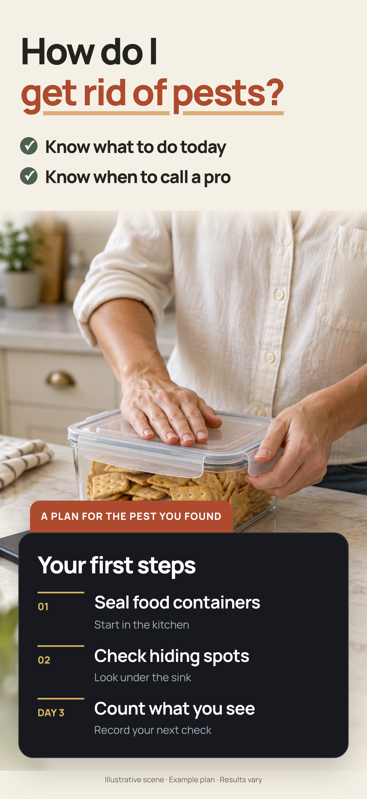
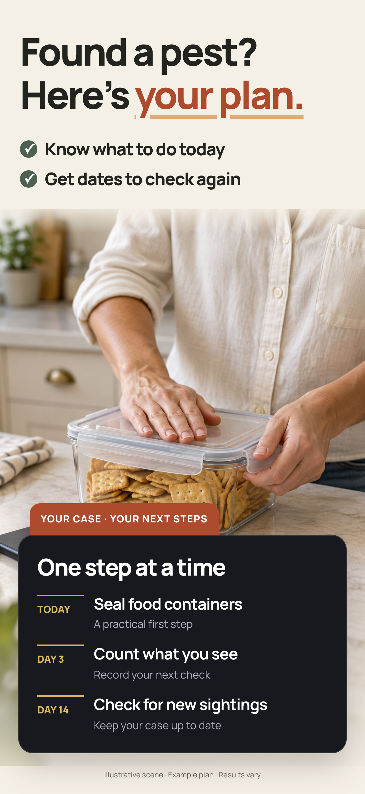
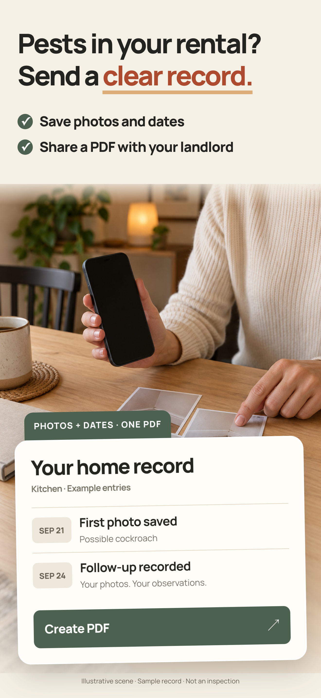

Первые три кадра — от вопросов аудитории: что это, что делать и чьи это следы. Крупный заголовок, один буллет и понятный образ: человек сканирует находку → действует по плану → распознаёт следы у дома.
r7 · P01 и P03 утверждены · новый P021320 × 2868 · RGBОснова продукта: sprint 4db2569Приоритет — скачивание
01 · Узнать, что нашлиВопрос, с которым человек уже пришёл в поиск. Рука с небольшим телефоном в нижней части: насекомое видно и на столешнице, и в камере. Телефон поддерживает сцену сканирования; результат — компактно справа. Скачать P01 · PNG ↗02 · Понять, что делатьСцена под раковиной открыта. Внизу небольшой телефон с планом: три иконки на экране связаны с короткими пунктами рядом. Большая плашка убрана. Скачать P02 · PNG ↗03 · Разобраться по следамСитуация домовладельцев и арендаторов: повреждение есть, насекомого нет. Жилой дом, отмеченный участок фундамента и одно увеличение того же фото объясняют, что приложение распознаёт следы. Скачать P03 · PNG ↗
Клик — увеличение. Фотографии сгенерированы; экран камеры и карточки — маркетинговая визуализация примеров, а не неизменённые снимки приложения. ИИ может ошибаться, пример плана не гарантирует избавления, фото следов не заменяет инспекцию. Идеи продукта можно доработать под сильное обещание аудитории.
Как это читается в маленьком превью
Все три рядом при ширине 220 px. Понятность проверяем отдельно от желания нажать: красивые сцены без понятной задачи не проходят.
Архив сравнения выносок на r5 · до утверждения P01/P03
Как сравнивали выноски на прошлой версии
Сравниваем только аннотации. Фотографии, положение телефона, заголовки, один буллет и короткий план одинаковые. Третий кадр во всех вариантах побайтово совпадает с принятым r4. После этого сравнения владелец утвердил P01 и P03 из основного ряда. Текущий ZIP выше — r7 с новым вторым кадром; B/C ниже оставлены как история, не как предложение менять утверждённые кадры.
B · Одна привязка, без новых слов — рекомендация на этапе r5
На первом результат связан с тараканом. На втором отметка у ловушки связана с карточкой, а пункт Set a trap выделен тем же цветом. Это повторяет понятный приём третьего кадра и сохраняет короткий текст.
C · Две подписанные выноски — предпочтение Jev по описанию
На первом: Scan this bug / See the match. На втором: Place trap here / Follow your plan. Jev предпочитает этот вариант в текстовом сравнении, но в реальном превью подписи See the match и Follow your plan добавляют отдельные блоки чтения и повторяют уже видимые карточки. На этапе r5 этот вариант был показан отдельно от основной композиции. Результаты Jev ниже относятся к r5, а не к текущему телефону с планом в r7.
Средние вероятности Choice модели Jev 1.13.0: 16 синтетических сценариев из прошлой панели (8 домовладельцев, 5 арендаторов, 3 без острой проблемы) × 3 перестановки = 48 запросов. Каждый вариант побывал первым, вторым и третьим. Вопрос — причина рассмотреть скачивание при быстром просмотре; оплата и продление не оценивались. Jev видел только текстовые описания, не пиксели. Это не реальные посетители, не CTR и не CVR. Источники: запросы, ответы и сводка.
Решение не начинается с нуля. Это сохранённая итерация r5. В текущей r7 первый и третий кадры утверждены, изменён только второй по новому указанию владельца. Тогдашняя рекомендация B учитывала обратную связь «меньше текста, не перекрывать сцену»; она не была победой в Jev или измеренным ростом конверсии.
r2 · независимый разбор Astra + 60 оценок Jev
Питомец — сильная отдельная история. В основной тройке оставляем дом.
Первая тройка сохраняет один понятный путь: что за вредитель → что делать → чьи следы. Собака вместо третьего кадра лучше попадает в запрос владельца питомца, но забирает пользу «поможет, даже если самого жука не видно». Поэтому не добавляем животное как украшение и не смешиваем два сценария в одном кадре.
Когорта
Третий кадр: следы дома
Третий кадр: клещ на собаке
Ни один
Домовладельцы · 8 сценариев
0.761
0.190
0.049
Арендаторы · 5
0.633
0.223
0.144
Родители · 4
0.154
0.589
0.258
Владельцы питомцев · 4
0.005
0.984
0.011
Без острой проблемы · 3
0.712
0.212
0.077
Нейтральный контроль · 6
0.633
0.353
0.014
Средние вероятности выбора Jev 1.13.0, два порядка вариантов. 24 исходных синтетических описания + 6 контрольных без заданного вредителя. Jev сравнивал текстовые описания сцен, не изображения. Это не опрос людей, не доли рынка и не прогноз конверсии. Сценарии со срочной проблемой заранее привязаны к вредителям; нейтральный контроль уменьшает эту привязку, но также не представляет рынок.
Почему таракан. Для домовладельцев он получил 0.318 среди пяти визуальных героев, муравьи — 0.191. В нейтральном контроле таракан — 0.498, клещ на собаке — 0.287. У арендаторов чаще выбирается клоп, у владельцев питомцев — клещ. Таракан выбран для узнаваемой кухонной ситуации и связи с планом во втором кадре; универсального «самого конверсионного жука» эти данные не устанавливают.
Если делаем отдельную страницу для питомцев
Приоритет ниже — редакционный порядок по моменту тревоги, а не измеренный рейтинг этих четырёх формулировок. Первая задача — определить видимого паразита, а не «просканировать животное».
Боль
Предлагаемый заголовок
Что должно быть видно
1. Что это в шерсти?
Tick or flea? Know what you found.
Питомец рядом с хозяином + одно увеличение найденного паразита и возможное определение.
2. Что делать сейчас?
Found a tick? Know your next step.
Понятные действия для ситуации и граница, когда связаться с ветеринаром. Без определения инфекции по фото.
3. А дома они тоже есть?
Fleas keep coming back? Know where to check.
Питомец → лежанка → домашние зоны проверки; план учитывает вид животного.
4. Что показать ветеринару?
Keep a clear record. Share what you found.
Фото находки и даты наблюдений, собранные в одну запись.
В общем продукте уместно учитывать «дома есть кошка / собака» при подборе действий. В первые три скриншота этот дополнительный слой сейчас не выносим. Для трафика про клещей и блох питомец должен стать первым кадром отдельной серии.
У каждой группы свой повод скачать. Общую витрину строим для домовладельцев и арендаторов; для родителей и владельцев животных нужны отдельные первые кадры под их поисковый запрос.
Домовладелец · 8 сценариевНа кухне пробежал жук. Что это и что мне сейчас делать?
Определить вредителя — 3.60. Узнать свою проблему за первым кадром.
Получить действия — 2.70. Конкретный первый шаг, а не энциклопедия.
Проверить следы — 2.03. Повреждения, трубки, помёт, когда самого вредителя не видно.
What’s this bug? Snap to find out.
Арендатор · 5 сценариевХозяин просит фото и даты. Как показать ему, что происходит?
Запись и письмо хозяину — 2.57. Из наблюдений получается понятное обращение.
Проверить следы — 2.31. Где искать то, что оставил вредитель.
Разобраться с укусами — 1.84. Что проверить вокруг кровати; без диагноза по коже.
Pests in your rental? Send a clear record.
Родитель · 4 сценарияНа ребёнке след от укуса. Когда нужна помощь?
Предупреждающие признаки — 3.22. Понятный следующий шаг при тревожном симптоме.
Возможная причина — 2.43. От чего мог появиться след.
Что сделать сейчас — 1.89. Без обещания, что приложение подтвердит безопасность.
Worried about a bite? Know when to get help.
Владелец питомца · 4 сценарияЧто это в шерсти после прогулки — клещ? Что дальше?
Клещ или блоха + действия — 3.38. Нужен питомец на фото и ответ по его ситуации.
Определение — 2.86. Что именно нашли.
Следующий шаг — 2.39. Практические действия и когда связаться с ветеринаром.
Tick on your dog? Know your next step.
Оценки Jev 0–4 — сила причины скачать в синтетическом сценарии. Заголовки для родителей и питомцев здесь — редакционные предложения, ещё не визуально собранные и не отдельные победители турнира заголовков. Три «просто любопытных» посетителя оценены отдельно: им обычно достаточно определения, они не задают общую витрину.
От более широкой причины к более узкой
Порядок потребностей для общей витрины
24 описания людей из спринта × два порядка вариантов. Средняя оценка ниже — по 21 посетителю с реальной ситуацией: 8 домовладельцев, 5 арендаторов, 4 родителя и 4 владельца питомца. Это состав панели, не доли рынка и не прогноз установок.
#
Потребность → заголовок
Jev
Роль в серии
01
Что за вредитель? What’s this bug? / Snap to find out.
2.74 / 4
P01 · основной ряд
02
Как избавиться? Что сделать сейчас? How do I / get rid of pests?
2.17 / 4
P02 · основной ряд
03
Чьи это следы, если жука не видно? Hidden pests? / Scan the signs.
1.54 / 4
P03 · основной ряд
04
Когда нужно обращаться за помощью? Worried about a bite? / Know when to get help.
1.21 / 4
Ветка для родителей
05
Стало меньше или проблема остаётся? Still seeing bugs? / Track what changes.
1.18 / 4
Продолжение серии
06
Нужно ли вызывать специалиста? Need an exterminator? / Know what to ask.
1.14 / 4
Продолжение серии
07
Кто кусал меня ночью? Woke up with bites? / Know where to look.
0.86 / 4
Ветка для арендаторов
08
Как показать проблему арендодателю? Pests in your rental? / Send a clear record.
0.83 / 4
Отдельная страница для арендаторов
09
Клещ или блоха? Что делать с питомцем? Tick on your dog? / Know your next step.
0.81 / 4
Отдельная страница для питомцев
Узкая потребность не значит слабая. Питомец и письмо арендодателю внизу общей таблицы из-за узкого охвата. В своей когорте это лидеры. Для рекламы по «tick on dog» или «bed bug landlord» им нужен первый кадр, а не восьмой.
Метод: 9 задач, независимые Score-вопросы с фиксированной шкалой, отдельный Choice «что важнее всего», два прохода с обратным порядком. Грубая понятность исследуется по тексту; Jev не видел пиксели. Нет реальных пользователей, измерения спроса, CTR или CVR. Исходные запросы и ответы сохранены в репозитории.
Что изменилось после проверок
Итерации, а не один красивый макет
09 · r7: первый и третий утверждены; меняем только второй.
По новой обратной связи убрали большую плашку P02. Добавили небольшой телефон внизу, по масштабу близкий к телефону в P01. Три строки с иконками на экране связаны с крупными пунктами рядом: Set a trap / Remove crumbs / Check daily. Сцена с руками и ловушкой остаётся открытой. P01 и P03 побайтово совпадают с утверждёнными файлами r5.
08 · r5: телефон участвует в сцене, а не закрывает её.
Большие макеты r4 убраны после обратной связи. В P01 новая фотография: рука с телефоном низко в кадре, камера направлена на видимого таракана, экран показывает ту же находку. Результат компактно справа. В P02 восстановлена сцена под раковиной и нижняя карточка; оставлены только Your cockroach plan и три крупных пункта с иконками. По одному буллету под заголовками сохранено. P03 принят владельцем и побайтово совпадает с r4.
По обратной связи первые два кадра пересобраны вокруг крупных телефонов. В первом вид камеры показывает таракана, рамку скана и переход к следующим шагам. Во втором — три коротких пункта с иконками: Set a trap, Remove crumbs, Check daily. Под каждым из трёх заголовков ровно один буллет. Убраны абзацы, мелкие подписи и плашки. В третьем сохранены дом и увеличение следа; результат и действие стали крупнее. Все слова в основном макете — от 22 px, без мелких сносок; ограничения концепта вынесены на эту страницу.
06 · r3: третий заголовок читается наравне с первым.
«Droppings? Damage? / What left this?» требовал мелкого шрифта и расшифровки слова «this». Новый вариант: «Hidden pests? / Scan the signs.» — проблема и действие. Размер увеличен с 37 до 46 px, как в P01. Подзаголовок «Scan droppings & damage» называет конкретные объекты. Проверено в превью 180/220 px. Это редакционная правка по обратной связи, без нового замера конверсии или голосования Jev.
По обратной связи убрали пустые телефоны и сцену с контейнером. P01 — скан таракана на кухне; P02 — проверка под раковиной с планом для тараканов; P03 — окно, фундамент и увеличение следа из той же фотографии. Astra проверила композиции в 220 px: заменили непонятное «monitor» на «monitoring trap», убрали лишнюю подпись у увеличения. Заголовки сохранены.
Предыдущая визуальная подача r1 — до правок

01 · Убрали старую подачу через страх.
«Know in 3 seconds», проценты уверенности и сравнение с Picture Insect уступили прямому вопросу человека. Важнее показать, что фотографируют и какой ответ получают.
02 · Проверили, что именно продаёт скачивание.
После синхронизации со спринтом попробовали ряд «определение → дело с датами → запись для арендодателя». Он хорошо рассказывает продукт V2, но отдаёт два первых слота плану и записи. По просьбе владельца пересобрали приоритеты от потребности скачать, а не от состава готовых функций.
03 · Усилили слова аудитории.
«Here’s your plan» заменили вопросом «How do I get rid of pests?». В третьем кадре назвали знакомые предметы: «Droppings? Damage?». В турнире заголовков вариант с вопросом об избавлении получил среднюю модельную вероятность выбора 0.375 против 0.281 у общего плана; предметное «Droppings or damage?» — 0.403 против 0.189 у «No bug in sight?». Это сравнение текстов, не конверсия.
04 · Довели чтение в 180–220 px.
Две строки заголовка, две строки пользы, крупная карточка. Во втором кадре заменили «it» на «pests»: отдельно от первого он тоже объясняет категорию. Исправили ориентацию камер в двух сценах. Убрали полные маленькие телефоны с нечитаемым интерфейсом.
Сравнение полных рядов подтвердило различия когорт. Для домовладельцев Jev выбирает r1 с вероятностью 0.733 против 0.250 у r0. Для арендаторов — r0 с PDF: 0.787 против 0.144. У родителей «ни один» — 0.506. Это аргумент для отдельных первых экранов, а не обещание общего роста конверсии.
Вариант для арендаторов: план и запись дома (r0)
Ряд r0. В финальном сравнении он оказался сильнее у арендаторов. Третий кадр — основа отдельной страницы для этой когорты.


Продукт подтягиваем под обещание
Что нужно обеспечить в приложении
Обещание
Основа в sprint
Доработка
Назвать возможного вредителя
Есть Фото + результат с уровнями уверенности
Свести определение и первый шаг в один быстрый, читаемый результат.
Дать действия на сегодня
Есть основа Action cards, дело, даты повторных проверок
План должен быть коротким и приоритетным: сейчас → повторная проверка → когда обращаться к профи.
Разобраться по следам
Есть Режим Evidence и контекстные подсказки
Проверить реальные примеры помёта, повреждений и трубок; при слабом фото просить контекст.
Подготовить запись для арендодателя
Есть Фото, даты, PDF
Письмо — доработать Генератор текста уже есть, нужно подключение к редактированию и отправке в интерфейсе.
Ветка sprint проверена повторно: 4db2569. V2 собрана и запущена в отдельном симуляторе. Маркетинговые карточки показывают предложенную иерархию пользы, не точные пиксели текущего интерфейса. Скриншоты не загружались в App Store.
Как проверить конверсию дальше
В Product Page Optimization сравнить текущую тройку с вариантом, где третий кадр — запись для арендодателя. Для трафика родителей и владельцев питомцев сделать отдельные страницы по их задаче. Метрика — скачивание со страницы; подписку и продление анализировать отдельно.
Направление и порядок — рабочая гипотеза. Реальная конверсия появится только в эксперименте с посетителями магазина.


{kind=link}
{kind=link}
{kind=link}
{kind=link}
{kind=link}
{kind=link}
{kind=link}
{kind=link}
{kind=link}
{kind=link}
{kind=link}
{kind=link}
{kind=link}
{kind=link}